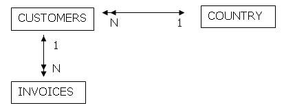

The extended table of a given Base Table is a virtual table composed of the base table itself plus all the tables which have N-1 relations, either directly or indirectly, starting from the given base table. For example, if you have the following Bachman Diagram: 
Explanation: In its extended table, the INVOICES base table contains, in addition to itself, the CUSTOMERS table and the COUNTRY table. This is because starting from the INVOICES table (base table) there is an N-1 relation with the CUSTOMER table, and starting from the CUSTOMER table there is an N-1 relation with the COUNTRY table. Note that if you take one record from INVOICES, you find only one record from CUSTOMER related to it (and no more than one); and if you take one record from CUSTOMERS, you find only one record from COUNTRY related to it (and no more than one). Following the same reasoning, in its extended table, the CUSTOMER base table contains, in addition to itself, the COUNTRY table. This is because starting from the CUSTOMER table (base table) there is an N-1 relation with the COUNTRY table. Note that if you take one record from CUSTOMERS, you find only one record from COUNTRY related to it (and not more than one). The COUNTRY base table only contains itself in its extended table. This is because starting from it, there is no N-1 relation either directly or indirectly.
|